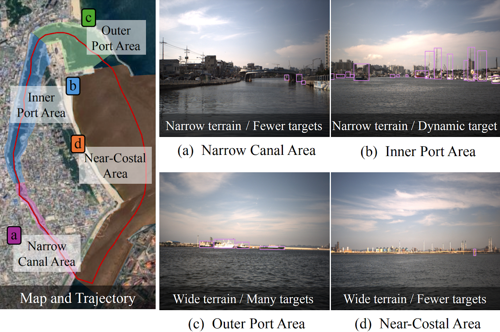
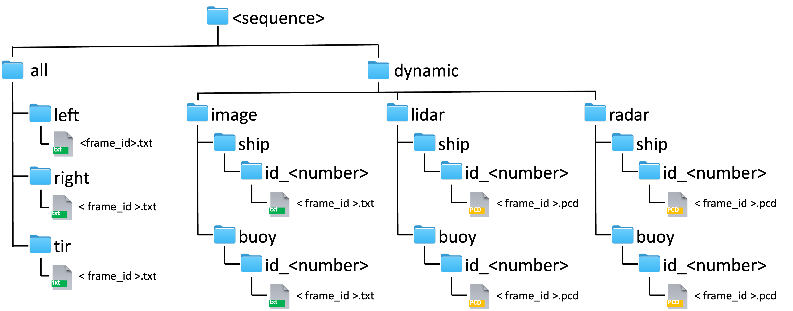

The trajectory of all data sequences consists of (a) to (d), and there are a total of 6 sequences.
We selected five major sequences
Pohang00, 02, 03, 04 for day and
Pohang01 for night.
Pohang05 was excluded due to the absence of dynamic objects and poor lighting conditions.

Data Fomat

All label files for the image sensors are stored in a folder named all.
All image labels and point-wise labels of dynamic objects store in the folder named dynamic.
Image Annotation Format
All image annotations are stored object bounding boxes for the Stereo and TIR cameras, and are in YOLO format.
Dynamic image Annotation Format
The dynamic image annotations are stored in YOLO format, including the object IDs corresponding to the left image.
Dynamic Point-wise Annotation Format
The dynamic pose-wise annotations are stored the LiDAR and radar PCD format corresponding to the object ID.